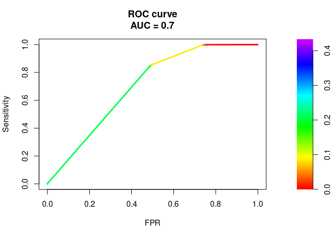
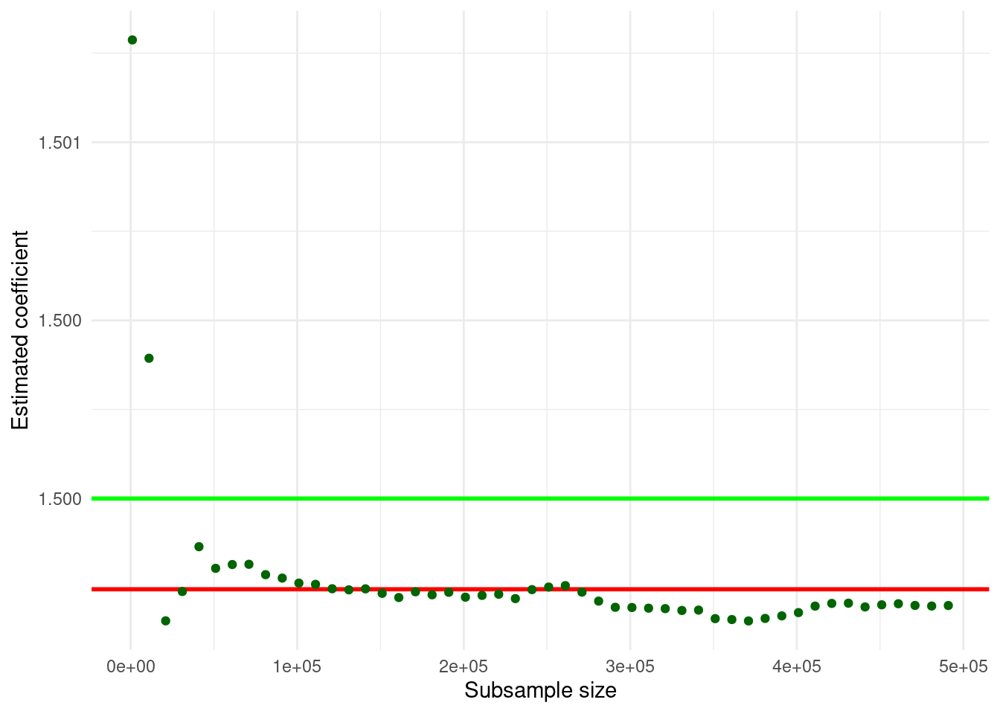

Chapter 3 Two domains of Big Data Analytics
As discussed in the previous chapter, data analytics in the context of Big Data can be broadly be categorized into two domains: techniques/estimators to address big P problems and techniques/estimators to address big N problems. While this book predominantly focuses on how to handle Big Data for applied economics and business analytics settings in the context of big N problems, it is useful to set the stage for the following chapters with two practical examples concerning big P and big N methods.
3.1 A practical big P problem
Due to the abundance of digital data on all kinds of human activities, both empirical economists and business analysts are increasingly confronted with high-dimensional data (many signals, many variables). While having a lot of variables to work with sounds kind of like a good thing, it introduces new problems in coming up with useful predictive models. In the extreme case of having more variables in the model than observations, traditional methods cannot be used at all. In the less extreme case of just having dozens or hundreds of variables in a model (and plenty of observations), we risk “falsely” discovering seemingly influential variables and consequently coming up with a model with potentially very misleading out-of-sample predictions. So how can we find a reasonable model?4
Let us look at a real-life example. Suppose you work for Google’s e-commerce platform www.googlemerchandiseshop.com, and you are in charge of predicting purchases (i.e., a user is actually buying something from your store in a given session) based on user and browser-session characteristics.5 The dependent variable purchase is an indicator equal to 1 if the corresponding shop visit leads to a purchase and equal to 0 otherwise. All other variables contain information about the user and the session (Where is the user located? Which browser is (s)he using? etc.). As the dependent variable is binary, we will first estimate a simple logit model, in which we use the origins of the store visitors (how did a visitor end up in the shop) as explanatory variables. Note that many of these variables are categorical, and the model matrix thus contains a lot of ‘’dummies’’ (indicator variables). The plan in this (intentionally naive) first approach is to simply add a lot of explanatory variables to the model, run logit, and then select the variables with statistically significant coefficient estimates as the final predictive model. The following code snippet covers the import of the data, the creation of the model matrix (with all the dummy-variables), as well as the logit estimation.
# import/inspect data
ga <- read.csv("data/ga.csv")
head(ga[, c("source", "browser", "city", "purchase")])## source browser city purchase
## 1 google Chrome San Jose 1
## 2 (direct) Edge Charlotte 1
## 3 (direct) Safari San Francisco 1
## 4 (direct) Safari Los Angeles 1
## 5 (direct) Chrome Chicago 1
## 6 (direct) Chrome Sunnyvale 1# create model matrix (dummy vars)
mm <- cbind(ga$purchase,
model.matrix(purchase~source, data=ga,)[,-1])
mm_df <- as.data.frame(mm)
# clean variable names
names(mm_df) <- c("purchase",
gsub("source", "", names(mm_df)[-1]))
# run logit
model1 <- glm(purchase ~ .,
data=mm_df, family=binomial)Now we can perform the t-tests and filter out the “relevant” variables.
model1_sum <- summary(model1)
# select "significant" variables for final model
pvalues <- model1_sum$coefficients[,"Pr(>|z|)"]
vars <- names(pvalues[which(pvalues<0.05)][-1])
vars## [1] "bing"
## [2] "dfa"
## [3] "docs.google.com"
## [4] "facebook.com"
## [5] "google"
## [6] "google.com"
## [7] "m.facebook.com"
## [8] "Partners"
## [9] "quora.com"
## [10] "siliconvalley.about.com"
## [11] "sites.google.com"
## [12] "t.co"
## [13] "youtube.com"Finally, we re-estimate our “final” model
# specify and estimate the final model
finalmodel <- glm(purchase ~.,
data = mm_df[, c("purchase", vars)],
family = binomial)The first problem with this approach is that we should not trust the coefficient t-tests based on which we have selected the covariates too much. The first model contains 62 explanatory variables (plus the intercept). With that many hypothesis tests, we quite likely reject the NULL of no predictive effect although there is actually no predictive effect. In addition, this approach turns out to be unstable. There might be correlation between some variables in the original set of variables, and adding/removing even one variable might substantially affect the predictive power of the model (and the apparent relevance of other variables). We see this already from the summary of our final model estimate (generated in the next code chunk). One of the apparently relevant predictors (dfa) is not at all significant anymore in this specification. Thus, we might be tempted to further change the model, which in turn would again change the apparent relevance of other covariates, and so on.
summary(finalmodel)$coef[,c("Estimate", "Pr(>|z|)")]## Estimate Pr(>|z|)
## (Intercept) -1.3831 0.000e+00
## bing -1.4647 4.416e-03
## dfa -0.1865 1.271e-01
## docs.google.com -2.0181 4.714e-02
## facebook.com -1.1663 3.873e-04
## google -1.0149 6.321e-168
## google.com -2.9607 3.193e-05
## m.facebook.com -3.6920 2.331e-04
## Partners -4.3747 3.942e-14
## quora.com -3.1277 1.869e-03
## siliconvalley.about.com -2.2456 1.242e-04
## sites.google.com -0.5968 1.356e-03
## t.co -2.0509 4.316e-03
## youtube.com -6.9935 4.197e-23An alternative approach would be to estimate models based on all possible combinations of covariates and then use that sequence of models to select the final model based on some out-of-sample prediction performance measure. Clearly such an approach would take a long time to compute.
Instead, the lasso estimator provides a convenient and efficient way to get a sequence of candidate models. The key idea behind the lasso is to penalize model complexity (the cause of instability) during the estimation procedure.6 In a second step, we can then select a final model from the sequence of candidate models based on, for example, “out-of-sample” prediction in a k-fold cross validation.
The gamlr package provides both parts of this procedure (lasso for the sequence of candidate models, and selection of the “best” model based on k-fold cross-validation).
# load packages
library(gamlr)
# create the model matrix
mm <- model.matrix(purchase~source, data = ga)In cases with both many observations and many candidate explanatory variables, the model matrix might get very large. Even simply generating the model matrix might be a computational burden, as we might run out of memory to hold the model matrix object. If this large model matrix is sparse (i.e, has a lot of 0 entries), there is a much more memory efficient way to store it in an R object. R provides ways to represent such sparse matrices in a compressed way in specialized R objects (such as CsparseMatrix provided in the Matrix package). Instead of containing all \(n\times m\) cells of the matrix, these objects only explicitly store the cells with non-zero values and the corresponding index. Below, we make use of the high-level sparse.model.matrix function to generate the model matrix and store it in a sparse matrix object. To illustrate the point of a more memory-efficient representation, we show that the traditional matrix object is about 7.5 times larger than the sparse version.
# create the sparse model matrix
mm_sparse <- sparse.model.matrix(purchase~source, data = ga)
# the sparse representation needs less than 15% of
# the memory needed for the standard matrix representation:
as.numeric(object.size(mm)/object.size(mm_sparse))## [1] 7.525Finally, we run the lasso estimation with k-fold cross-validation.
# run k-fold cross-validation lasso
cvpurchase <- cv.gamlr(mm_sparse, ga$purchase, family="binomial")We then can illustrate the performance of the selected final model, for example, with an ROC curve. Note that both the coef method and the predict method for gamlr objects automatically select the ‘best’ model.
# load packages
library(PRROC)
# use "best" model for prediction
# (model selection based on average OSS deviance, here CV1se rule
pred <- predict(cvpurchase$gamlr, mm_sparse, type="response")
# compute tpr, fpr, plot ROC
comparison <- roc.curve(scores.class0 = pred,
weights.class0=ga$purchase,
curve=TRUE)
plot(comparison)
Hence, econometrics techniques such as the lasso help deal with big P problems by providing reasonable ways to select a good predictive model (in other words, decide which of the many variables should be included).
3.2 A practical big N problem
Big N problems are situations in which we know what type of model we want to use but the number of observations is too big to run the estimation (the computer crashes or slows down significantly). The simplest statistical solution to such a problem is usually to just estimate the model based on a smaller sample. However, we might not want to do that for other reasons (see introduction above). As an illustration of how an alternative statistical procedure can speed up the analysis of big N datasets, we look at a procedure to estimate linear models when the classical OLS estimator is computationally too demanding when analyzing large datasets: The Uluru algorithm (Dhillon et al. 2013).
3.2.1 OLS as a point of reference
Recall the OLS estimator in matrix notation, given the linear model \(\mathbf{y}=\mathbf{X}\beta + \epsilon\):
\(\hat{\beta}_{OLS} = (\mathbf{X}^\intercal\mathbf{X})^{-1}\mathbf{X}^{\intercal}\mathbf{y}\).
In order to compute \(\hat{\beta}_{OLS}\), we have to compute \((\mathbf{X}^\intercal\mathbf{X})^{-1}\), which implies a computationally expensive matrix inversion.7 If our dataset is large, \(\mathbf{X}\) is large and the inversion can take up a lot of computation time. Moreover, the inversion and matrix multiplication to get \(\hat{\beta}_{OLS}\) needs a lot of memory. In practice, it might well be that the estimation of a linear model via OLS with the standard approach in R (lm()) brings a computer to its knees, as there is not enough RAM available.
To further illustrate the point, we implement the OLS estimator in R.
beta_ols <-
function(X, y) {
# compute cross products and inverse
XXi <- solve(crossprod(X,X))
Xy <- crossprod(X, y)
return( XXi %*% Xy )
}Now, we will test our OLS estimator function with a few (pseudo-)random numbers in a Monte Carlo study. First, we set the sample size parameters n (the number of observations in our pseudo-sample) and p (the number of variables describing each of these observations) and initiate the dataset X.
# set parameter values
n <- 10000000
p <- 4
# generate sample based on Monte Carlo
# generate a design matrix (~ our 'dataset')
# with 4 variables and 10,000 observations
X <- matrix(rnorm(n*p, mean = 10), ncol = p)
# add column for intercept
X <- cbind(rep(1, n), X)Now we define what the real linear model that we have in mind looks like and compute the output y of this model, given the input X.8
# MC model
y <- 2 + 1.5*X[,2] + 4*X[,3] - 3.5*X[,4] + 0.5*X[,5] + rnorm(n)Finally, we test our beta_ols function.
# apply the OLS estimator
beta_ols(X, y)## [,1]
## [1,] 2.0092
## [2,] 1.5003
## [3,] 3.9996
## [4,] -3.5006
## [5,] 0.49993.2.2 The Uluru algorithm as an alternative to OLS
Following Dhillon et al. (2013), we implement a procedure to compute \(\hat{\beta}_{Uluru}\):
\[\hat{\beta}_{Uluru}=\hat{\beta}_{FS} + \hat{\beta}_{correct}\], where \[\hat{\beta}_{FS} = (\mathbf{X}_{subs}^\intercal\mathbf{X}_{subs})^{-1}\mathbf{X}_{subs}^{\intercal}\mathbf{y}_{subs}\], and \[\hat{\beta}_{correct}= \frac{n_{subs}}{n_{rem}} \cdot (\mathbf{X}_{subs}^\intercal\mathbf{X}_{subs})^{-1} \mathbf{X}_{rem}^{\intercal}\mathbf{R}_{rem}\], and \[\mathbf{R}_{rem} = \mathbf{Y}_{rem} - \mathbf{X}_{rem} \cdot \hat{\beta}_{FS}\].
The key idea behind this is that the computational bottleneck of the OLS estimator, the cross product and matrix inversion,\((\mathbf{X}^\intercal\mathbf{X})^{-1}\), is only computed on a sub-sample (\(X_{subs}\), etc.), not the entire dataset. However, the remainder of the dataset is also taken into consideration (in order to correct a bias arising from the sub-sampling). Again, we implement the estimator in R to further illustrate this point.
beta_uluru <-
function(X_subs, y_subs, X_rem, y_rem) {
# compute beta_fs
#(this is simply OLS applied to the subsample)
XXi_subs <- solve(crossprod(X_subs, X_subs))
Xy_subs <- crossprod(X_subs, y_subs)
b_fs <- XXi_subs %*% Xy_subs
# compute \mathbf{R}_{rem}
R_rem <- y_rem - X_rem %*% b_fs
# compute \hat{\beta}_{correct}
b_correct <-
(nrow(X_subs)/(nrow(X_rem))) *
XXi_subs %*% crossprod(X_rem, R_rem)
# beta uluru
return(b_fs + b_correct)
}We then test it with the same input as above:
# set size of sub-sample
n_subs <- 1000
# select sub-sample and remainder
n_obs <- nrow(X)
X_subs <- X[1L:n_subs,]
y_subs <- y[1L:n_subs]
X_rem <- X[(n_subs+1L):n_obs,]
y_rem <- y[(n_subs+1L):n_obs]
# apply the uluru estimator
beta_uluru(X_subs, y_subs, X_rem, y_rem)## [,1]
## [1,] 2.0537
## [2,] 1.4978
## [3,] 3.9993
## [4,] -3.5029
## [5,] 0.5007This looks quite good already. Let’s have a closer look with a little Monte Carlo study. The aim of the simulation study is to visualize the difference between the classical OLS approach and the Uluru algorithm with regard to bias and time complexity if we increase the sub-sample size in Uluru. For simplicity, we only look at the first estimated coefficient \(\beta_{1}\).
# define sub-samples
n_subs_sizes <- seq(from = 1000, to = 500000, by=10000)
n_runs <- length(n_subs_sizes)
# compute uluru result, stop time
mc_results <- rep(NA, n_runs)
mc_times <- rep(NA, n_runs)
for (i in 1:n_runs) {
# set size of sub-sample
n_subs <- n_subs_sizes[i]
# select sub-sample and remainder
n_obs <- nrow(X)
X_subs <- X[1L:n_subs,]
y_subs <- y[1L:n_subs]
X_rem <- X[(n_subs+1L):n_obs,]
y_rem <- y[(n_subs+1L):n_obs]
mc_results[i] <- beta_uluru(X_subs,
y_subs,
X_rem,
y_rem)[2] # (1 is the intercept)
mc_times[i] <- system.time(beta_uluru(X_subs,
y_subs,
X_rem,
y_rem))[3]
}
# compute OLS results and OLS time
ols_time <- system.time(beta_ols(X, y))
ols_res <- beta_ols(X, y)[2]Let’s visualize the comparison with OLS.
# load packages
library(ggplot2)
# prepare data to plot
plotdata <- data.frame(beta1 = mc_results,
time_elapsed = mc_times,
subs_size = n_subs_sizes)First, let’s look at the time used estimate the linear model.
ggplot(plotdata, aes(x = subs_size, y = time_elapsed)) +
geom_point(color="darkgreen") +
geom_hline(yintercept = ols_time[3],
color = "red",
size = 1) +
theme_minimal() +
ylab("Time elapsed") +
xlab("Subsample size")
The horizontal red line indicates the computation time for estimation via OLS; the green points indicate the computation time for the estimation via the Ulruru algorithm. Note that even for large sub-samples, the computation time is substantially lower than for OLS.
Finally, let’s have a look at how close the results are to OLS.
ggplot(plotdata, aes(x = subs_size, y = beta1)) +
geom_hline(yintercept = ols_res,
color = "red",
size = 1) +
geom_hline(yintercept = 1.5,
color = "green",
size = 1) +
geom_point(color="darkgreen") +
theme_minimal() +
ylab("Estimated coefficient") +
xlab("Subsample size")
The horizontal red line indicates the size of the estimated coefficient, when using OLS. The horizontal green line indicates the size of the actual coefficient. The green points indicate the size of the same coefficient estimated by the Uluru algorithm for different sub-sample sizes. Note that even relatively small sub-samples already deliver estimates very close to the OLS estimates.
Taken together, the example illustrates that alternative statistical methods, optimized for large amounts of data, can deliver results very close to traditional approaches. Yet, they can deliver these results much more efficiently.
3.3 Conclusion
When applying econometrics to ‘’large’’ datasets, two types of problems dominate: a) the number of covariates is ‘too large’ to handle with traditional estimators (big P problem) and/or b) the number of observations is ‘too large’ to handle with traditional estimators (big N problem). The first problem is being addressed by an interesting new strain of econometrics literature, which builds on previously known machine learning algorithms such as lasso and random forest and clarifies the statistical properties of predictions coming from these algorithms. While the following chapters will repeatedly link to these contributions in specific code examples, the main focus of the following chapters lies on the big N problem and the key underlying concepts (in terms of software, hardware, and faster new estimators) to productively perform data analytics tasks when confronted with large amounts of data. Several of the following chapters will also focus on something that is often ignored in the applied econometrics literature: how do we get from the raw data to the cleaned and filtered analytic dataset to run regressions. While these topics are generally highly relevant for proper data science and data analytics workflows, you will see that these topics are absolutely crucial when working with large datasets.
References
Note that finding a model with good in-sample prediction performance is trivial when you have a lot of variables: simply adding more variables will improve the performance. However, that will inevitably result in a nonsensical model as even highly significant variables might not have any actual predictive power when looking at out-of-sample predictions. Hence, in this kind of exercise we should exclusively focus on out-of-sample predictions when assessing the performance of candidate models.↩︎
We will in fact be working with a real-life Google Analytics dataset from www.googlemerchandiseshop.com; see here for details about the dataset: https://www.blog.google/products/marketingplatform/analytics/introducing-google-analytics-sample/.↩︎
In simple terms, this is done by adding \(\lambda\sum_k{|\beta_k|}\) as a ‘’cost’’ to the optimization problem.↩︎
The computational complexity of this is larger than \(O(n^{2})\). That is, for an input of size \(n\), the time needed to compute (or the number of operations needed) is \(n^2\).↩︎
In reality we would not know this, of course. Acting as if we knew the real model is exactly the point of Monte Carlo studies. It allows us to analyze the properties of estimators by simulation.↩︎